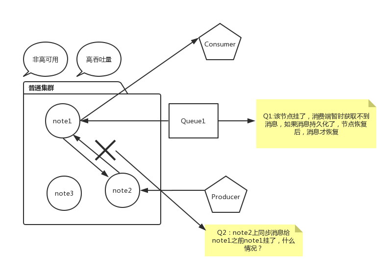

集群特点
RabbitMQ节点不完全拷贝。所以其他非所有者节点只知道队列的元数据，和指向该队列节点的指针。

集群节点类型
- 内存节点
- 磁盘节点
如果集群只有一个磁盘节点，当该节点宕机时，集群仍然运行，但是不能创建Queue，Exchange，Binding， 也不能增加用户，更改权限，集群节点删除和增加也不行。因此为了集群的健壮，应两个磁盘节点。
基于Docker测试集群部署
Docker是现在很流行的容器化技术，它部署方便，资源消耗小。Docker的学习可以查看Docker从入门到实践
首先获取RabbitMQ镜像
docker pull rabbitmq:3-management
利用刚刚获取的镜像启动三个RabbitMQ容器。用docker ps查看是否启动成功。
docker run -d --hostname rabbit1 --name rabbitmq-cluster1 -p 15672:15672 -p 5672:5672 -e RABBITMQ_ERLANG_COOKIE='rabbitcookie' rabbitmq:3-management
docker run -d --hostname rabbit2 --name rabbitmq-cluster2 -p 15673:15672 -p 5673:5672 -e RABBITMQ_ERLANG_COOKIE='rabbitcookie' rabbitmq:3-management
docker run -d --hostname rabbit3 --name rabbitmq-cluster3 -p 15674:15672 -p 5674:5672 -e RABBITMQ_ERLANG_COOKIE='rabbitcookie' rabbitmq:3-management
创建bridge网络模型
xufan in ~ λ docker network create my-net
da548bf4ff7d59a9b5bea3ca1b15a54ec4eb6474cf13c7023617ee505632c7db
xufan in ~ λ docker network ls
NETWORK ID NAME DRIVER SCOPE
a537e2bf0f6e allspark_default bridge local
be294ecd2c06 bridge bridge local
13a3502ca0b7 host host local
da548bf4ff7d my-net bridge local
74271d3b1ef4 none null local
将上面创建的三个容器连接到自定义的网络my-net上。
docker network connect my-net rabbitmq-cluster1
docker network connect my-net rabbitmq-cluster2
docker network connect my-net rabbitmq-cluster3
执行docker exec -it rabbitmq-cluster1 bash进入第1个容器，ping其他两台容器看看是否网络正常联通。如果没有ping命令，可安装iputils-ping
在第2，3个节点执行下面命令加入集群
rabbitmqctl stop_app
rabbitmqctl reset
rabbitmqctl join_cluster rabbit@rabbit1
rabbitmqctl start_app
有时会执行失败，后面再抽时间分析下具体原因和解决思路。
镜像队列
默认，RabbitMQ集群的队列和消息只存储在一个单一的节点（宣布它的节点）。如果这个节点挂掉，它的Queue和Message都将丢失（Exchange和Binding三个节点都有，因此不会丢失）。因此，RabbitMQ支持镜像队列。每个镜像队列高可用有一个主队列，然后一个或多个从队列。所有的操作先传给主队列，主队列再分发给从队列。如Publisher分发一个消息，只有消息成功分发给所有从队列，才会得到确认。Customer消费消息，不管它连接的是哪个节点，都会转到主节点。镜像队列提升了高可用，但是没有负载均衡的效果（所有节点做相同的工作）